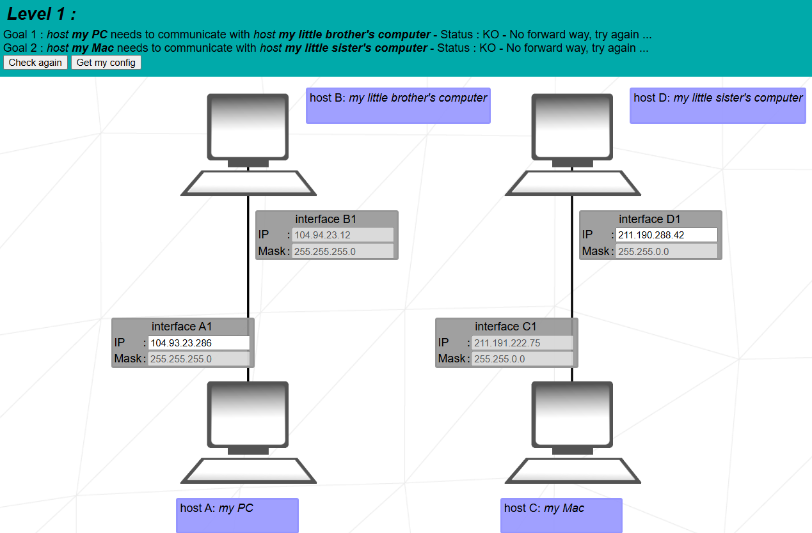
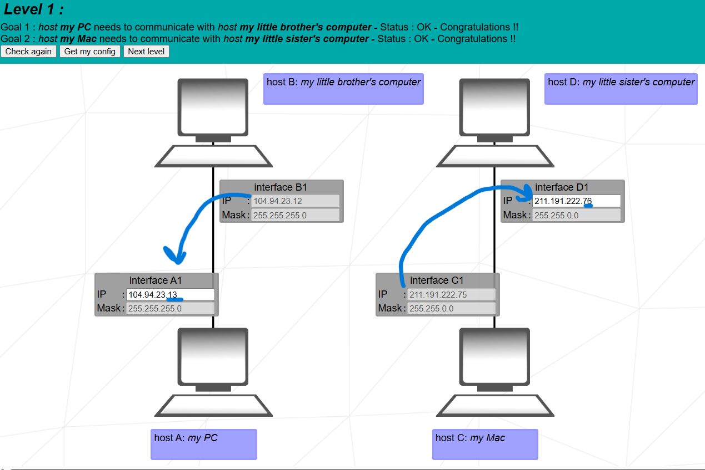

Goal: make host A ↔ host B and host C ↔ host D communicate on their own LANs by putting each pair in the same subnet.


There is no routing in this level. Each pair of hosts communicates only inside its own LAN. For each pair you must apply the rule: two hosts can talk directly only if their IP addresses belong to the same network for the given subnet mask.
A1 and B1 share the same /24; only the host part (last octet) is different, so A and B can communicate through the switch.
C1 and D1 are both inside 211.191.0.0/16; the first two octets match, and the last two octets are different hosts, so C and D can communicate.
Mask /24 → 255.255.255.0
As long as A1 is any value between 1 and 254 in the last octet with the same first three octets, it remains in the same subnet as B1.
Mask /16 → 255.255.0.0
Any address of the form 211.191.x.y (except network/broadcast) is in
the same /16. D1 is chosen as 211.191.222.76, one step above C1.
“Packet accepted” means the source host configuration is valid. “Destination IP reached” confirms that the address is reachable in that subnet. The reverse-way logs (B → A and D → C) repeat the same test in the opposite direction.
“Level 1 has two independent LANs with no routers. For each pair I apply the same rule: the two interfaces must be in the same network for their mask. On the left the mask is /24, so the first three octets define the network. B1 is fixed at 104.94.23.12, so I keep the subnet 104.94.23.0/24 and choose another host in the usable range, 104.94.23.13, for A1.
On the right the mask is /16, so the first two octets define the network. C1 is 211.191.222.75, which belongs to 211.191.0.0/16. I keep this subnet and choose 211.191.222.76 for D1. Now both pairs are in a common subnet and can communicate.”